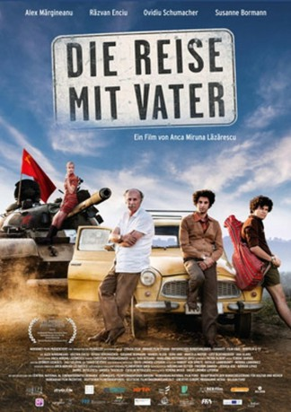
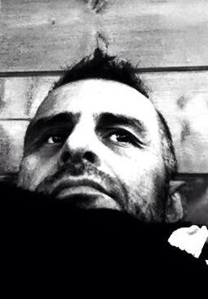

#6306 Die Reise mit Vater
 
 IMDB-Wertung: 7.5 / 10
IMDB-Wertung: 7.5 / 10  Metascore: 0
Metascore: 0 
1968 in Rumänien: Seit dem Tod der Mutter hält der junge Arzt Mihai (Alex Margineanu) seine Familie zusammen. Sein jüngerer Bruder Emil (Razvan Enciu) hingegen hat nichts Besseres zu tun als gegen den Staat zu rebellieren. Und zu allem Überfluss ist ihr Vater William (Ovidiu Schumacher) nicht nur langsam am Erblinden, sondern auch noch lebensbedrohlich erkrankt. Das einzige, was ihm jetzt noch retten könnte, ist eine Operation in der DDR. Gemeinsam ziehen die drei Männer los Richtung Ostdeutschland. Kaum angekommen, müssen sie erfahren, dass sowjetische Panzer den Weg zurück versperren und sie in Deutschland festsitzen. In einem Auffanglager für Touristen lernt Mihai die Studentin Ulli (Susanne Bormann) kennen und verfällt ihr sofort. Als dann die Familie Dank eines Transitvisums unverhofft in der BRD landet, steht sie vor der großen Frage: Sollen sie im Westen bleiben oder in die Heimat zurückkehren?
Jahr: 2016
Dauer: 106 Minuten
FSK: 12
Land: Deutschland Studio: MovienetTonspuren:
Untertitel:
Auflösung: SD (720x302) Größe: 738 MB
Genre: Drama, Komödie
Regisseur: Anca Miruna Lazarescu
Drehbuch: Rafi Pitts
Soundtrack:
Darsteller:
- Alexandru Margineanu als Mihai Reinholtz
- Ovidiu Schumacher als William Reinholtz
- Susanne Bormann als Ulrike von Syberg
- Manuel Klein als Hans-Uwe Janson
 Ana Ularu als Dr. Sanda Berceanu
Ana Ularu als Dr. Sanda Berceanu-  Björn Freiberg als Bavarian Police Officer
- Tom Pilath als Eastgerman Border Soldier
- Razvan Enciu als Emil Reinholtz
- Doru Ana als Securitate-Officer Juganar
- Marcela Nistor als Neli
- Lutz Blochberger als Eastgerman Hauptmann Heinrichs
- Florin Galan als Catalin
- Friedrich Schilha als Gatekeeper Otto
- Colin Buzoianu als Securitate-Officer Renner
- Mihai Penisoara als Romanian Officer
- Liliana Balica als Nurse #1
- Roxana Sabau-Nica als Nurse #2
- Irene Flamann als School-Directress
- Monique Maior als School-Secretary
- Patrick Czako als 'Soviet' boy Dudu
- Valentin Alexandru Bernat als Dudu's friends
- Mihai Iatin als Dudu's friends
- Marius Tatar als Dudu's friends
- Giulia Tatar als Dudu's friends
- Alexandru Nicolas Vese als Dudu's friends
- Mirela Puia als Dudu's Mother
- Carmen Butariu als Catalin's Mother
- Alexander Malarik als Eastgerman Border Soldiers
- Botond Baranyai als Eastgerman Border Soldiers
- Bogdan Comanescu als Eastgerman Border Soldiers
- David Lindner Leporda als Eastgerman Border Soldiers
- Felix zu Knyphausen als Eastgerman Soldier with dog
- Jan Andreesen als Lieutenant Römrich
- Horatiu Covlescu als Eastgerman Camp Soldier Günther
- Ansgar Göbel als Eastgerman Camp Soldier Blaschke
- Oltea Prelea Blaga als Romanian Tourists
- Dorel Nica als Romanian Tourists
- Isa Berger als Romanian Tourists
- Bogdan Costea als Romanian Tourists
- Georg Peetz als Stasi / Secret Service GutermannStasi
- Silvana Mihai als Czech Band
- Patrick Jansick als Czech Band
- Illes Szabo als Czech Band
- Statenco Dragos Alexandru als Czech Band
- Erik Olle als Czech tourist in luchroom
- Nelli Szücs als Russian tourists
- Peter Erdelyi als Russian tourists
- Viktor Ivaskovics als Russian tourists
- Emil Suciuc als Secretary Romanian Embassy
- Mark Zentai als Westgerman border soldier
Datei: X:\2016(N-Z)\Reise mit Vater, Die (2016, FSK12, 720x302).mkv seit 06.06.2017
Festplatte: HD 2016(A-Z)
 Es gibt insgesamt 182 Filme in der Gruppe '2016(N-Z)'
Es gibt insgesamt 182 Filme in der Gruppe '2016(N-Z)'